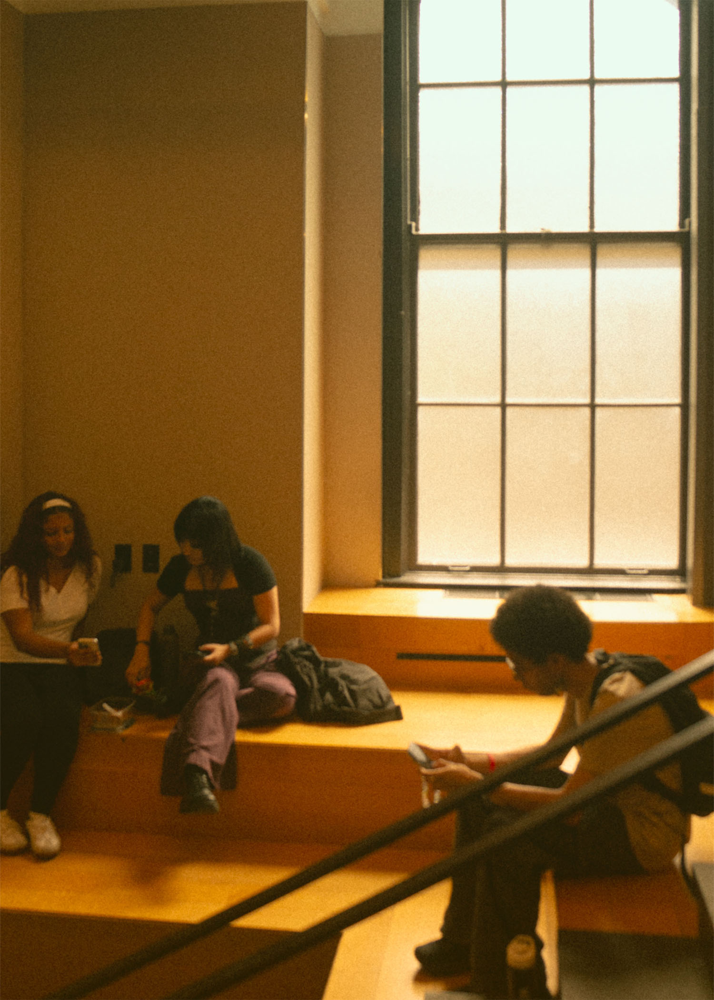
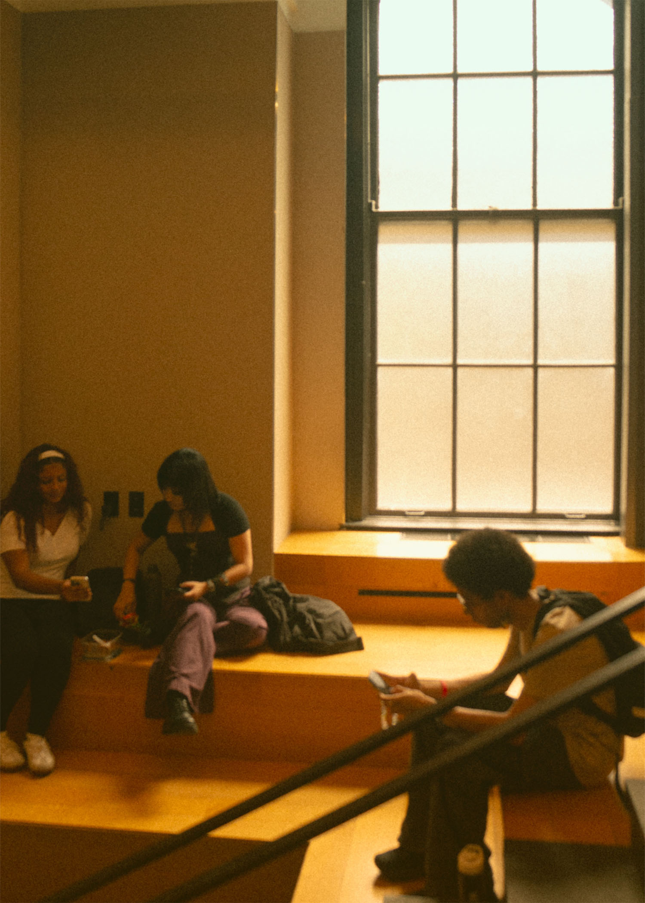

I choose this image for the 5x7 in selection because I really loved the lighting and environment. The outside isn’t visible and looked white but that element allowed me to play around with the color of the light in this image. I tried making the color of the wood pop by using color grading (orange,red, and yellow). I additionally used a gradient layer and dimmed the opacity to make it look more natural. My purpose for creating this layer was to fill in all the other areas that may seem too orange or red and I used the color green to do so. Additionally, I added semi heavy grain to this image.